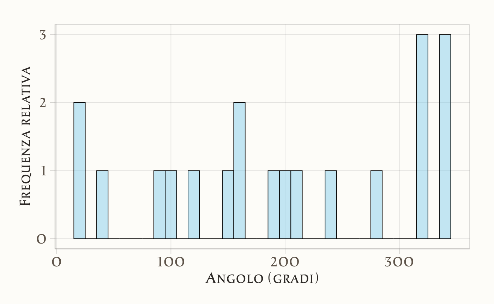
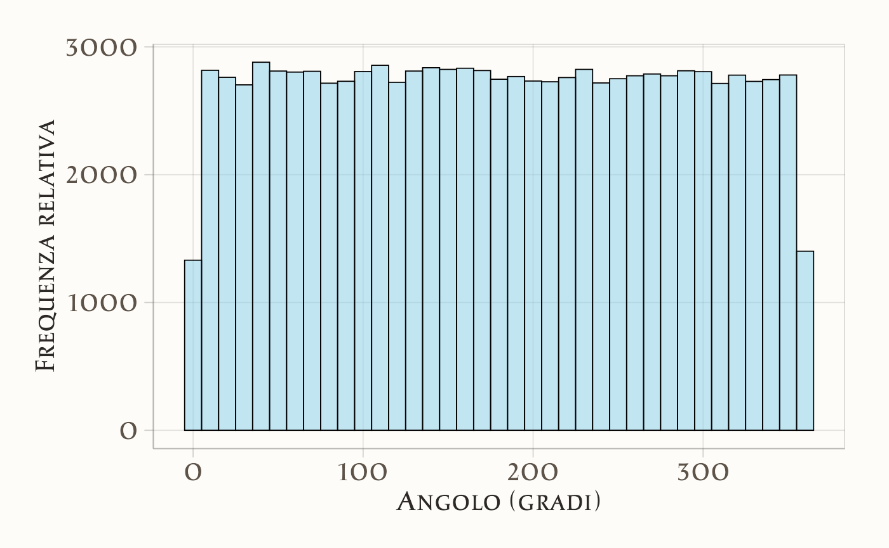
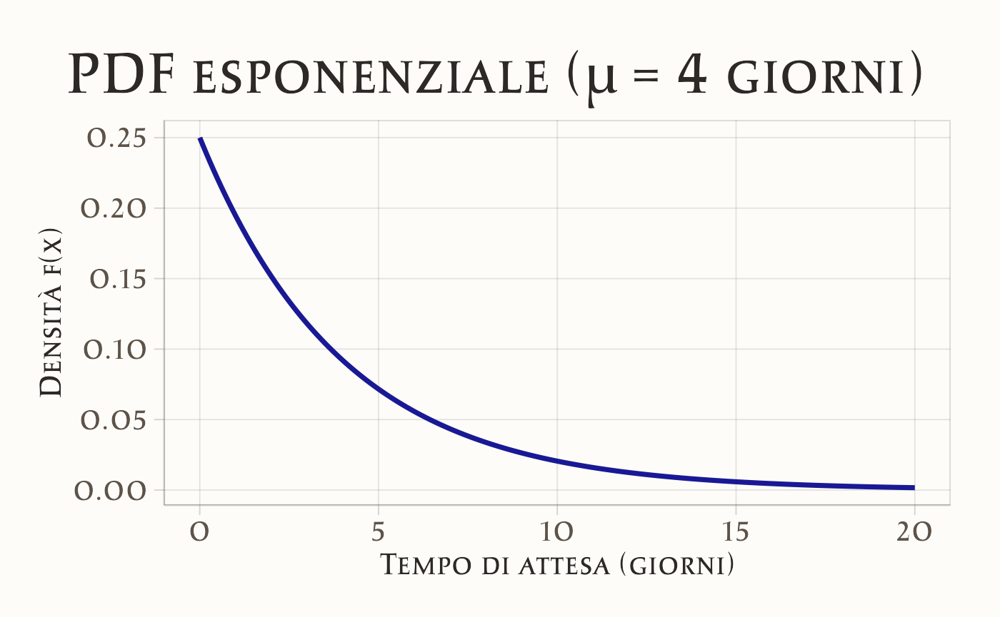
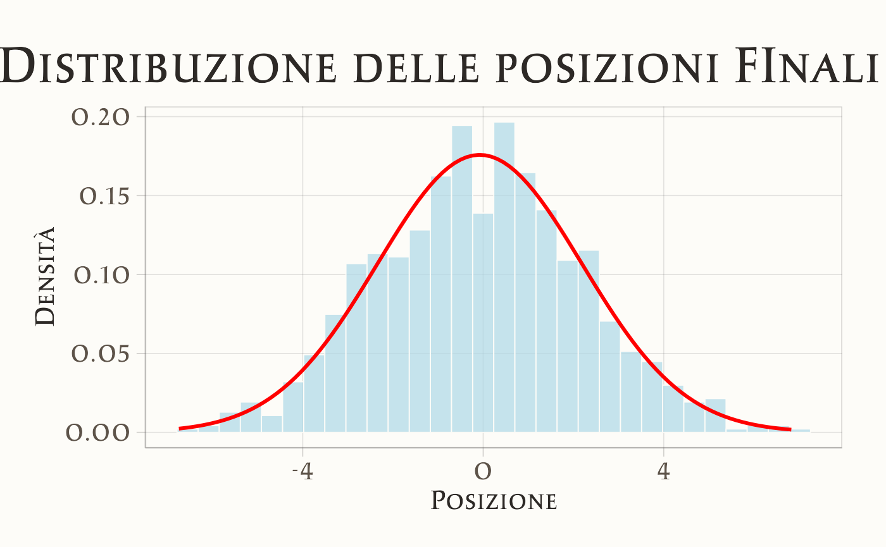
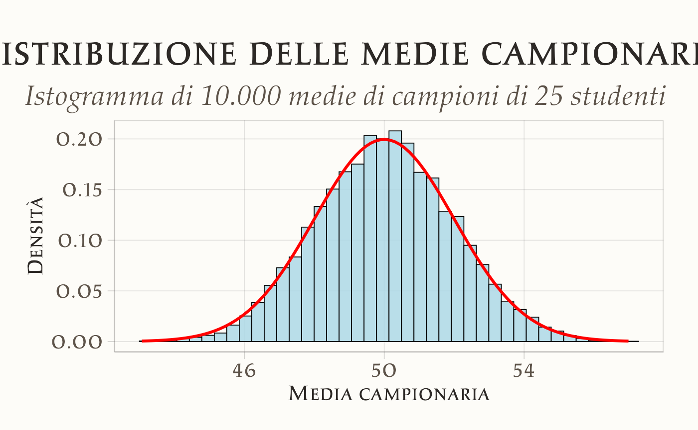
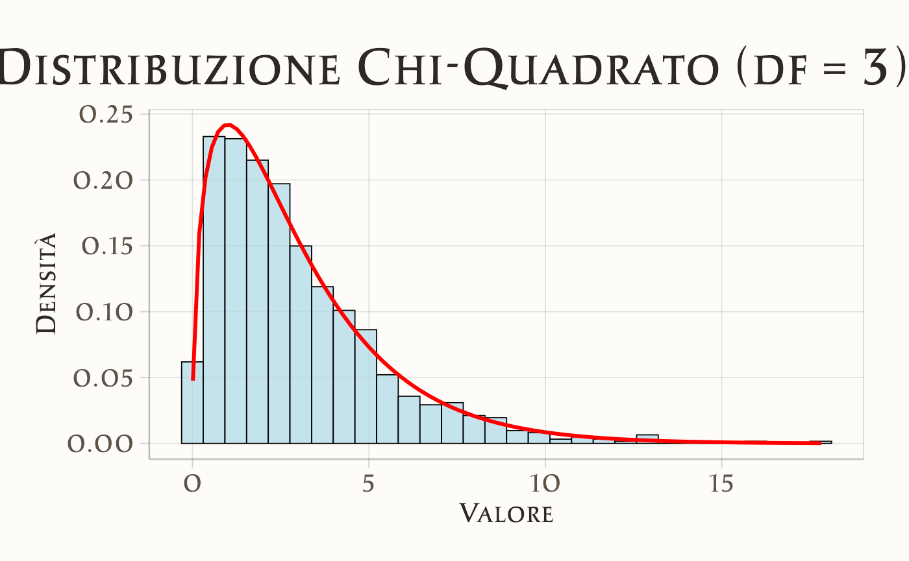
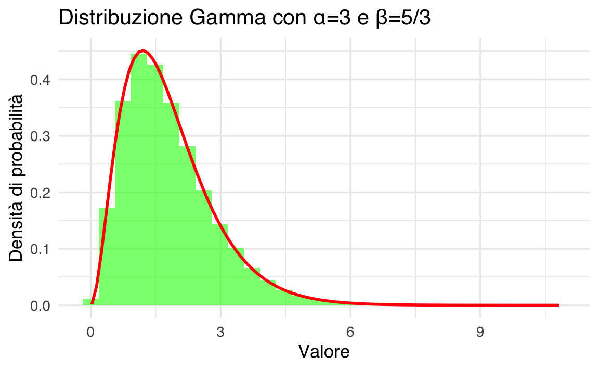

here::here("code", "_common.R") |>
source()
# Load packages
if (!requireNamespace("pacman")) install.packages("pacman")
pacman::p_load(mice)39 Distribuzioni di v.c. continue
Prerequisiti
Concetti e Competenze Chiave
Preparazione del Notebook
39.1 Introduzione
Analogamente a quanto avviene per le variabili casuali discrete, anche per le variabili casuali continue possiamo rappresentare la variabilità all’interno di una popolazione attraverso un modello statistico, ma in questo caso utilizziamo le densità di probabilità – si veda il ?sec-density-function. Mentre le distribuzioni di probabilità discrete si applicano a fenomeni con un numero finito o numerabile di esiti, le densità di probabilità sono fondamentali per descrivere variabili che possono assumere un continuum di valori.
La funzione di densità di probabilità \(f(x)\) associata a una variabile casuale continua \(X\) rappresenta la distribuzione della probabilità all’interno della popolazione. Questa funzione non fornisce la probabilità esatta di un singolo valore, ma piuttosto la probabilità di osservare valori di \(X\) all’interno di un intervallo specifico. Così come per le distribuzioni discrete, anche le densità di probabilità costituiscono un modello della popolazione, una rappresentazione matematica che ci consente di fare previsioni e di comprendere meglio i fenomeni aleatori continui.
Iniziamo con la distribuzione continua uniforme.
39.1.1 Distribuzione Uniforme
La distribuzione uniforme è una delle più semplici funzioni di densità di probabilità. Consideriamo di nuovo l’esperimento dello spinner introdotto in precedenza. Simuliamo 20 valori che potrebbero essere ottenuti facendo ruotare lo spinner e li rappresentiamo con un istogramma.
39.1.1.1 Simulazione di 20 valori
# Simulazione di 20 valori
set.seed(123)
spinner_results <- runif(20, min = 0, max = 360)
print(spinner_results)
#> [1] 103.5 283.8 147.2 317.9 338.6 16.4 190.1 321.3 198.5 164.4 344.5
#> [12] 163.2 243.9 206.1 37.1 323.9 88.6 15.1 118.1 343.6
ggplot(data.frame(Valori = spinner_results), aes(x = Valori)) +
geom_histogram(binwidth = 10, fill = "skyblue", color = "black", alpha = 0.5) +
labs(x = "Risultato dello spinner", y = "Frequenza relativa",
title = "Istogramma dei risultati (20 simulazioni)") 
Nonostante possiamo pensare che ogni risultato tra 0 e 360 sia ugualmente probabile, l’istogramma non lo suggerisce chiaramente con solo 20 osservazioni. Simuliamo ora 100.000 ripetizioni.
39.1.1.2 Simulazione di 100.000 valori
# Simulazione di 100.000 valori
spinner_results_large <- runif(100000, min = 0, max = 360)
# Istogramma
ggplot(data.frame(Valori = spinner_results_large), aes(x = Valori)) +
geom_histogram(binwidth = 10, fill = "skyblue", color = "black", alpha = 0.5) +
labs(x = "Risultato dello spinner", y = "Frequenza relativa",
title = "Istogramma dei risultati (100.000 simulazioni)") 
In questo caso, anche se ci sono variazioni nelle altezze delle barre (bin di ampiezza pari a 10), la forma generale dell’istogramma appare piuttosto uniforme su tutto l’intervallo \([0, 360]\). Con un numero enorme di risultati, l’istogramma si avvicinerebbe alla funzione di densità uniforme mostrata di seguito.
39.1.1.3 Funzione di densità uniforme
# Curva della funzione di densità uniforme
x <- seq(0, 360, length.out = 100)
density_uniform <- dunif(x, min = 0, max = 360)
ggplot(data.frame(x = x, y = density_uniform), aes(x = x, y = y)) +
geom_line(size = 1, color = "blue") +
labs(x = "x", y = "p(x)", title = "Funzione di densità uniforme")
#> Warning: Using `size` aesthetic for lines was deprecated in ggplot2 3.4.0.
#> ℹ Please use `linewidth` instead.
Quando la variabile casuale \(X\) è continua, come nel caso dello spinner, la probabilità è rappresentata da una curva, la funzione di densità di probabilità. Poiché lo spinner copre l’intervallo \([0, 360]\), la probabilità che \(X\) sia compreso in questo intervallo è pari a 1. La densità costante è quindi:
1 / 360
#> [1] 0.0027839.1.1.4 Probabilità in un intervallo specifico
La probabilità di ottenere un valore tra 150 e 250, \(P(150 < X < 250)\), è data dall’area sottesa alla curva in quell’intervallo. L’altezza della curva è \(1/360\), mentre la base è \(250 - 150 = 100\). Quindi:
100 * (1 / 360)
#> [1] 0.278Per calcolare la probabilità, si possono utilizzare le funzioni di distribuzione cumulative:
39.1.1.5 Visualizzazione dell’intervallo di probabilità
# Visualizzazione della probabilità nell'intervallo [150, 250]
x <- seq(0, 360, length.out = 1000)
fx <- dunif(x, min = 0, max = 360)
ggplot(data.frame(x = x, fx = fx), aes(x = x, y = fx)) +
geom_line(size = 1, color = "blue") +
geom_area(data = subset(data.frame(x = x, fx = fx), x >= 150 & x <= 250),
aes(x = x, y = fx), fill = "gray", alpha = 0.5) +
labs(x = "x", y = "p(x)", title = "Probabilità per l'intervallo [150, 250]")
In maniera più formale possiamo dire che la distribuzione continua uniforme è una distribuzione di probabilità continua che assegna lo stesso grado di fiducia a tutti i possibili valori di una variabile definita in un certo intervallo \(S=[a,b]\subset {\mathbb {R}}\). La distribuzione continua uniforme viene indicata con \({\mathcal {U}}(a,b)={\mathcal {U}}([a,b])\). Come intervallo \([a,b]\) viene spesso preso l’intervallo unitario \(I=[0,1]\).
La densità di probabilità di una variabile casuale continua uniforme \({\mathcal {U}}(a,b)\) è
\[ f(x)={\frac {1}{b-a}} \quad \text{su}\; [a, b]. \]
Il suo valore attesto è
\[ \displaystyle E(X)={\frac {1}{2}}(b+a). \]
La sua varianza è
\[ V(X)={\frac {1}{12}}(b-a)^{2}. \]
In R, è possibile manipolare la distribuzione uniforme utilizzando le funzioni della famiglia runif, dunif, punif e qunif. Di default, queste funzioni lavorano con la distribuzione uniforme standard \(\mathcal{U}(0,1)\).
39.1.2 Funzione di densità di probabilità (PDF)
La funzione dunif() calcola l’ordinata della funzione di densità per i valori di input specificati. Per esempio, esaminiamo la densità di \(\mathcal{U}(0,1)\) per i valori 0.5, 0.8 e 1.2. Ci aspettiamo di ottenere 1 per i primi due valori e 0 per 1.2, che è fuori dall’intervallo \([0, 1]\).
39.1.3 Funzione di ripartizione (CDF)
La funzione punif() restituisce il valore della funzione di ripartizione. Per esempio, per \(\mathcal{U}(0,1)\) nei punti 0.5 e 0.8:
39.1.4 Calcolo della probabilità in un intervallo
Utilizzando la funzione di ripartizione, possiamo calcolare la probabilità che la variabile casuale continua assuma un valore in un intervallo specificato. Per esempio, per \(\mathcal{U}(0,1)\) troviamo \(P(0.5 < X < 0.8)\):
39.1.5 Calcolo dei quantili
La funzione qunif() restituisce i quantili della distribuzione uniforme, ovvero il valore della variabile casuale \(X\) in corrispondenza del valore della funzione di ripartizione fornito in input. Per esempio, troviamo i quantili di ordine 0.5 e 0.8 di \(\mathcal{U}(0,1)\):
39.1.6 Simulazione di valori casuali
La funzione runif() consente di generare numeri casuali dalla distribuzione uniforme. Per esempio, simuliamo 5 valori casuali da \(\mathcal{U}(0,1)\):
39.1.7 Valore atteso
Per verificare il valore atteso di 100,000 realizzazioni di \(\mathcal{U}(0,1)\):
39.1.8 Varianza
Per calcolare la varianza di 100,000 realizzazioni di \(\mathcal{U}(0,1)\):
Confrontiamo il valore teorico della varianza per \(\mathcal{U}(0,1)\), che è \(1/12\):
1 / 12
#> [1] 0.0833In conclusione, le funzioni della famiglia runif, dunif, punif e qunif in R consentono di manipolare e analizzare la distribuzione uniforme.
39.2 Distribuzione esponenziale
Un’altra distribuzione di densità molto semplice è la distribuzione esponenziale. La distribuzione esponenziale viene spesso utilizzata per modellare il tempo trascorso prima che un evento si verifichi (tempo di attesa).
La distribuzione esponenziale è l’unica distribuzione di probabilità continua che possiede la proprietà di assenza di memoria. Ad esempio, ipotizziamo che il tempo necessario affinché un bicchiere da vino si rompa dopo il primo utilizzo segua una distribuzione esponenziale. Supponiamo inoltre che ci sia un bicchiere da vino che non si è rotto dopo 3 anni dal primo utilizzo. L’assenza di memoria significa che la probabilità che questo bicchiere da vino non si rompa nel prossimo anno è la stessa della probabilità che un altro bicchiere da vino nuovo non si rompa nel primo anno di utilizzo.
Chiamiamo \(X\) il tempo di attesa. Sia \(\mu = \mathbb{E}(X)\) il tempo di attesa medio. La funzione di densità esponenziale è
\[ f(x) = \lambda {\rm e}^{-\lambda x}, \quad \text{con} \; \lambda = 1/\mu,\, \lambda > 0,\, x > 0, \tag{39.1}\]
ovvero
\[ f(x) = \frac{1}{\mu} {\rm e}^{-x/\mu}. \]
La media di una distribuzione esponenziale è
\[ E(X) = \frac{1}{\lambda}. \]
La varianza di una distribuzione esponenziale è
\[ V(X) = \mu = \frac{1}{\lambda^2}. \]
La deviazione standard è dunque uguale alla media:
\[ \sigma_X = \frac{1}{\lambda} = \mu. \]
Ad esempio, il tempo di attesa della pubblicazione del voto di un esame scritto segue una distribuzione esponenziale. Supponiamo che, in questo Corso di Laurea, il tempo di attesa medio per conoscere il risultato di un esame scritto sia di 4 giorni. La funzione esponenziale diventa
\[ f(x) = \frac{1}{4} \exp^{-x/4}. \]
39.2.1 Grafico della funzione di densità esponenziale
La densità esponenziale è definita da \(f(x) = \lambda e^{-\lambda x}\). In R, possiamo disegnarla con:
# Parametri della distribuzione
mu <- 4 # Media
lambda <- 1 / mu # Tasso (1 / media)
stdev <- 1 / lambda # Deviazione standard
# Generare valori per x
x <- seq(0, 20, by = 0.01)
# Calcolare la densità
pdf <- dexp(x, rate = lambda)
# Grafico della densità
ggplot(data.frame(x, pdf), aes(x = x, y = pdf)) +
geom_line(size = 1, color = "blue") +
labs(x = "x", y = "f(x)", title = "Funzione di densità della distribuzione esponenziale") 
39.2.2 Probabilità che \(X \leq 1.5\)
La probabilità \(P(X \leq 1.5)\) è calcolata con la funzione di ripartizione pexp():
# Probabilità che X <= 1.5
pexp(1.5, rate = lambda)
#> [1] 0.313Visualizzazione dell’area sottesa:
ggplot(data.frame(x, pdf), aes(x = x, y = pdf)) +
geom_line(size = 1, color = "blue") +
geom_area(data = subset(data.frame(x, pdf), x <= 1.5), aes(x = x, y = pdf), fill = "gray", alpha = 0.5) +
labs(x = "x", y = "f(x)", title = "Probabilità P(X <= 1.5)") 
39.2.3 Probabilità che \(1 \leq X \leq 6\)
La probabilità \(P(1 \leq X \leq 6)\) si calcola come differenza di funzioni di ripartizione:
Visualizzazione dell’area sottesa:
ggplot(data.frame(x, pdf), aes(x = x, y = pdf)) +
geom_line(size = 1, color = "blue") +
geom_area(data = subset(data.frame(x, pdf), x >= 1 & x <= 6), aes(x = x, y = pdf), fill = "gray", alpha = 0.5) +
labs(x = "x", y = "f(x)", title = "Probabilità P(1 <= X <= 6)")
39.2.4 Probabilità che \(X \geq 5.5\)
La probabilità \(P(X \geq 5.5)\) si ottiene con l’evento complementare \(1 - P(X \leq 5.5)\) oppure con 1 - pexp():
Visualizzazione dell’area sottesa:
ggplot(data.frame(x, pdf), aes(x = x, y = pdf)) +
geom_line(size = 1, color = "blue") +
geom_area(data = subset(data.frame(x, pdf), x >= 5.5), aes(x = x, y = pdf), fill = "gray", alpha = 0.5) +
labs(x = "x", y = "f(x)", title = "Probabilità P(X >= 5.5)") 
39.2.5 Istogramma di valori simulati
Simuliamo 1.000.000 di valori casuali da una distribuzione esponenziale con parametro \(\lambda = 1/4\), quindi costruiamo l’istogramma sovrapponendo la densità teorica.
# Simulazione di valori casuali
set.seed(123)
samples <- rexp(1000000, rate = lambda)
# Istogramma con densità sovrapposta
ggplot(data.frame(samples), aes(x = samples)) +
geom_histogram(aes(y = after_stat(density)), bins = 100, fill = "skyblue", color = "black", alpha = 0.5) +
geom_line(data = data.frame(x, pdf), aes(x = x, y = pdf), color = "red", size = 1) +
xlim(0, 20) +
labs(x = "Tempo di attesa", y = "Frequenza relativa",
title = "Istogramma dei valori simulati con densità teorica")
#> Warning: Removed 6631 rows containing non-finite outside the scale range
#> (`stat_bin()`).
#> Warning: Removed 2 rows containing missing values or values outside the scale
#> range (`geom_bar()`).
Questi esempi replicano tutte le funzionalità dell’implementazione Python utilizzando R e producono grafici chiari e ben definiti.
39.3 Distribuzione Gaussiana
La più importante distribuzione di densità è la Gaussiana. Non c’è un’unica distribuzione gaussiana (o Normale): la distribuzione gaussiana è una famiglia di distribuzioni. Tali distribuzioni sono dette “gaussiane” in onore di Carl Friedrich Gauss (uno dei più grandi matematici della storia il quale, tra le altre cose, scoprì l’utilità di tale funzione di densità per descrivere gli errori di misurazione). Adolphe Quetelet, il padre delle scienze sociali quantitative, fu il primo ad applicare tale funzione di densità alle misurazioni dell’uomo. Karl Pearson usò per primo il termine “distribuzione normale” anche se ammise che questa espressione “ha lo svantaggio di indurre le persone a credere che le altre distribuzioni, in un senso o nell’altro, non siano normali.”
39.3.1 Limite delle distribuzioni binomiali
Iniziamo con un un breve excursus storico. Nel 1733, Abraham de Moivre notò che, aumentando il numero di prove di una distribuzione binomiale, la distribuzione risultante diventava quasi simmetrica e a forma campanulare. Per esempio, con 10 prove e una probabilità di successo di 0.9, la distribuzione è chiaramente asimmetrica.
# Parametri
n <- 10
p <- 0.9
# Calcolare la distribuzione binomiale
r_values <- 0:n
dist <- dbinom(r_values, size = n, prob = p)
# Grafico
ggplot(data.frame(Successi = r_values, Probabilità = dist), aes(x = Successi, y = Probabilità)) +
geom_bar(stat = "identity", fill = "skyblue", color = "black") +
labs(title = "Distribuzione Binomiale: n = 10, p = 0.9", x = "Numero di Successi", y = "Probabilità") 
Quando il numero di prove N viene aumentato di un fattore di 100 a N = 1000, mantenendo costante la probabilità di successo del 90%, si osserva che la distribuzione assume una forma campanulare quasi simmetrica. Questa osservazione porta a una scoperta di de Moivre: quando N diventa grande, la funzione gaussiana, nonostante rappresenti la densità di variabili casuali continue, offre una buona approssimazione alla funzione di massa di probabilità binomiale.
# Parametri aggiornati
n <- 1000
# Calcolare la distribuzione
r_values <- 850:950 # Intervallo per una migliore visualizzazione
dist <- dbinom(r_values, size = n, prob = p)
# Grafico
ggplot(data.frame(Successi = r_values, Probabilità = dist), aes(x = Successi, y = Probabilità)) +
geom_bar(stat = "identity", fill = "skyblue", color = "black") +
labs(
title = "Distribuzione Binomiale: n = 1000, p = 0.9",
x = "Numero di Successi",
y = "Probabilità"
) 
La distribuzione Normale fu scoperta da Gauss nel 1809. Il Paragrafo successivo illustra come si possa giungere alla Normale mediante una simulazione.
39.4 La Normale prodotta con una simulazione
Il libro “Rethinking Statistics” di McElreath (2020) spiega come sia possibile ottenere la distribuzione normale attraverso una simulazione. Immaginiamo di avere duemila persone che si trovano allineate su una linea di partenza. Quando viene dato il segnale di partenza, ogni persona lancia una moneta e compie un passo avanti o indietro a seconda del risultato del lancio. La lunghezza di ogni passo può variare da 0 a 1 metro. Ogni persona lancia la moneta 16 volte e quindi compie 16 passi.
I risultati ottenuti da una serie di passeggiate casuali si traducono in varie distanze dall’origine, che è il punto da cui si parte, contrassegnato come zero, dopo un numero specificato di passi. Queste distanze sono rappresentate numericamente. Al termine di queste passeggiate, non è possibile determinare la posizione esatta di ogni individuo, ma è possibile descrivere accuratamente le caratteristiche della distribuzione delle 1000 distanze dall’origine.
Ad esempio, è possibile prevedere con precisione la frazione di individui che si sono mossi verso in avanti o indietro, o la proporzione di persone che si troveranno a una distanza specifica dal punto di partenza, come a 1.5 metri dall’origine. Queste previsioni sono fattibili perché la distribuzione delle distanze segue una distribuzione Normale.
Il codice presentato di seguito genera passeggiate casuali utilizzando un generatore di numeri casuali e ne traccia i percorsi risultanti. Il codice inizia inizializzando un oggetto generatore di numeri casuali con la funzione np.random.default_rng() della libreria numpy. Questo generatore sarà usato per produrre numeri casuali uniformemente distribuiti tra -1 e 1, simulando così il lancio di una moneta.
La variabile steps specifica il numero di passi per ogni passeggiata casuale, mentre repetitions indica il numero di passeggiate da generare. La variabile show_steps è un elenco di numeri di passi in cui il codice traccerà linee verticali sul grafico.
Successivamente, il codice crea un array bidimensionale di NumPy chiamato x con righe pari a steps + 1 e colonne pari a repetitions. La prima colonna di questo array è riempita di zeri, e le colonne rimanenti sono riempite con la somma cumulativa dei passi, ottenuti da numeri casuali uniformemente distribuiti generati dal generatore di numeri casuali. Questo array verrà utilizzato per memorizzare le posizioni della passeggiata casuale ad ogni passo.
Il codice poi prepara una figura per tracciare tutte le passeggiate casuali. Il codice traccia anche la prima passeggiata casuale in nero.
# Parametri
numero_passi <- 16
ripetizioni <- 1000
punti_da_evidenziare <- c(4, 8, 16)
# Generare passeggiate casuali
set.seed(123)
x <- matrix(0, nrow = numero_passi + 1, ncol = ripetizioni)
for (i in 1:ripetizioni) {
passi <- runif(numero_passi, min = -1, max = 1)
x[-1, i] <- cumsum(passi)
}
# Grafico delle passeggiate casuali
df <- data.frame(
Passo = rep(0:numero_passi, times = ripetizioni),
Distanza = as.vector(x)
)
# Grafico delle passeggiate casuali
ggplot(
df,
aes(
x = Passo,
y = Distanza,
group = rep(1:ripetizioni, each = numero_passi + 1))
) +
geom_line(color = "blue", alpha = 0.05) +
geom_line(
data = data.frame(Passo = 0:numero_passi, Distanza = x[, 1], group = 1),
aes(x = Passo, y = Distanza, group = group), color = "black") +
geom_vline(
xintercept = punti_da_evidenziare,
linetype = "dashed",
color = "black",
alpha = 0.5) +
labs(
title = "Passeggiate Casuali",
x = "Numero di Passi",
y = "Distanza dall'Origine"
) 
Il grafico riportato qui sotto visualizza la distribuzione dei passi a partire dalla linea mediana dopo 4, 8 e 16 lanci di moneta/passi. Quello che si nota è che, man mano che procediamo nel numero di passi, le densità iniziano a somigliare alla curva a campana associata alle distribuzioni Gaussiane.
densities <- lapply(punti_da_evidenziare, function(step) {
data.frame(Posizione = x[step + 1, ], Passo = step)
})
densities <- bind_rows(densities)
ggplot(densities, aes(x = Posizione, fill = as.factor(Passo))) +
geom_density(alpha = 0.6) +
facet_wrap(~ Passo, scales = "free") +
labs(
title = "Densità delle Posizioni",
x = "Posizione",
y = "Densità",
fill = "Passo" # Etichetta per la legenda
) +
theme(
legend.position = "bottom" # Sposta la legenda in basso
)
La chiarezza dell’informazione presentata nei grafici precedenti può essere migliorata utilizzando un KDE plot.
# Generare i dati
posizioni <- apply(matrix(runif(numero_passi * ripetizioni, min = -1, max = 1), nrow = numero_passi), 2, sum)
# Calcolare media e deviazione standard
media <- mean(posizioni)
dev_std <- sd(posizioni)
# Generare la curva normale
valori <- seq(min(posizioni), max(posizioni), length.out = 1000)
densità_normale <- dnorm(valori, mean = media, sd = dev_std)
# Grafico
ggplot(data.frame(Posizione = posizioni), aes(x = Posizione)) +
geom_density(fill = "skyblue", alpha = 0.5) +
geom_line(data = data.frame(Posizione = valori, Densità = densità_normale), aes(x = Posizione, y = Densità), color = "red", linetype = "dashed") +
labs(title = "Confronto tra Passeggiate Casuali e Normale", x = "Posizione", y = "Densità") 
Questa simulazione in luce un principio fondamentale della teoria delle probabilità: ogni processo che coinvolge la somma di una sequenza di valori casuali, tutti estratti dalla stessa distribuzione, inevitabilmente tende verso una distribuzione normale, comunemente conosciuta come curva gaussiana. Questa tendenza si verifica indipendentemente dalla configurazione iniziale della distribuzione di partenza, che può essere uniforme, come nell’esempio menzionato, o di qualsiasi altro tipo. La forma specifica della distribuzione iniziale influisce sulla velocità con cui si verifica questa convergenza verso il comportamento gaussiano, con variazioni significative nella velocità di convergenza: alcuni processi possono manifestare una convergenza lenta, mentre altri possono convergere estremamente rapidamente. Un esempio emblematico di questo fenomeno è rappresentato dal dispositivo conosciuto come Galton box, il quale offre una rappresentazione visiva e fisica di come la somma di valori casuali generi una distribuzione normale.
Un modo per razionalizzare la distribuzione Gaussiana è quello di pensare alle medie. Qualunque sia il valore medio della distribuzione di origine, ogni campione da essa può essere considerato una fluttuazione rispetto a quel valore medio. Tuttavia, quando sommiamo queste fluttuazioni insieme, esse si annullano a vicenda. E, facendo ciò, queste fluttuazioni convergono eventualmente alla media delle osservazioni collettive. Non importa quale sia la forma della distribuzione sottostante. A seconda della forma, le somme cumulative convergeranno inevitabilmente sulla media, alcune distribuzioni più lentamente di altre.
Dal punto di vista formale, possiamo definire una variabile casuale continua \(Y\) come avente una distribuzione normale se la sua densità di probabilità è distribuita secondo la seguente equazione
\[ f(y; \mu, \sigma) = {1 \over {\sigma\sqrt{2\pi} }} \exp \left\{-\frac{(y - \mu)^2}{2 \sigma^2} \right\}, \tag{39.2}\]
dove \(\mu \in \mathbb{R}\) e \(\sigma > 0\) sono i parametri della distribuzione.
La densità normale è unimodale e simmetrica con una caratteristica forma a campana e con il punto di massima densità in corrispondenza di \(\mu\).
Il significato dei parametri \(\mu\) e \(\sigma\) che appaiono nell’eq. {eq}eq-normal-formula viene chiarito dalla dimostrazione che
\[ \mathbb{E}(Y) = \mu, \qquad \mathbb{V}(Y) = \sigma^2. \]
La rappresentazione grafica di quattro densità Normali con medie -1, -0.5, 0, 1 e con deviazioni standard 0.25, 0.5, 1 e 2 è fornita nella figura seguente.
# Definire l'intervallo di x
x <- seq(-5, 6, by = 0.001)
# Parametri della distribuzione normale
mus <- c(-1.0, -0.5, 0.0, 1.0)
sigmas <- c(0.25, 0.5, 1, 2)
# Creare un data frame per tutte le combinazioni di mu e sigma
data <- do.call(rbind, lapply(1:length(mus), function(i) {
data.frame(
x = x,
f_x = dnorm(x, mean = mus[i], sd = sigmas[i]),
mu = mus[i],
sigma = sigmas[i]
)
}))
# Grafico
ggplot(data, aes(x = x, y = f_x, color = factor(mu), linetype = factor(sigma))) +
geom_line(size = 1) +
labs(
x = "x",
y = "f(x)",
color = expression(mu),
linetype = expression(sigma),
title = "Distribuzioni Normali con Diversi Parametri"
) +
theme(legend.position = "top")
39.4.1 Concentrazione
È istruttivo osservare il grado di concentrazione della distribuzione Normale attorno alla media:
\[ \begin{align} P(\mu - \sigma < Y < \mu + \sigma) &= P (-1 < Z < 1) \simeq 0.683, \notag\\ P(\mu - 2\sigma < Y < \mu + 2\sigma) &= P (-2 < Z < 2) \simeq 0.956, \notag\\ P(\mu - 3\sigma < Y < \mu + 3\sigma) &= P (-3 < Z < 3) \simeq 0.997. \notag \end{align} \]
Si noti come un dato la cui distanza dalla media è superiore a 3 volte la deviazione standard presenti un carattere di eccezionalità perché meno del 0.3% dei dati della distribuzione Normale presentano questa caratteristica.
Per indicare la distribuzione Normale si usa la notazione \(\mathcal{N}(\mu, \sigma)\).
39.4.2 Funzione di ripartizione
Il valore della funzione di ripartizione di \(Y\) nel punto \(y\) è l’area sottesa alla curva di densità \(f(y)\) nella semiretta \((-\infty, y]\). Non esiste alcuna funzione elementare per la funzione di ripartizione
\[ F(y) = \int_{-\infty}^y {1 \over {\sigma\sqrt{2\pi} }} \exp \left\{-\frac{(y - \mu)^2}{2\sigma^2} \right\} dy, \] (eq-gaussian-rip-formula)
pertanto le probabilità \(P(Y < y)\) vengono calcolate mediante integrazione numerica approssimata. I valori della funzione di ripartizione di una variabile casuale Normale sono dunque forniti da un software.
Ecco l’equivalente in R utilizzando le funzioni per la distribuzione normale e il pacchetto ggplot2 per i grafici.
39.4.3 Generazione di Valori Casuali
In R, la funzione rnorm() genera valori casuali dalla distribuzione normale. Ad esempio, per ottenere un singolo valore casuale dalla \(\mathcal{N}(100, 15)\):
Per estrarre 10 valori casuali dalla stessa distribuzione:
39.4.4 Funzione di Ripartizione (CDF)
Per calcolare la probabilità che un’osservazione casuale abbia un valore minore o uguale a 115, utilizziamo pnorm():
# Probabilità che X <= 115
pnorm(115, mean = 100, sd = 15)
#> [1] 0.84139.4.5 Visualizzazione dell’Area Sottesa alla Funzione di Densità
Possiamo visualizzare l’area sottesa utilizzando ggplot2:
# Parametri
mu <- 100
sigma <- 15
# Intervallo di x
x <- seq(mu - 3 * sigma, mu + 3 * sigma, length.out = 1000)
# Densità
fx <- dnorm(x, mean = mu, sd = sigma)
# Grafico
ggplot(data.frame(x, fx), aes(x = x, y = fx)) +
geom_line(color = "blue") +
geom_area(
data = subset(data.frame(x, fx), x <= 115),
aes(x = x, y = fx), fill = "gray", alpha = 0.5
) +
labs(title = "Funzione di Densità Normale", x = "x", y = "f(x)") 
39.4.6 Calcolo dell’Integrale con integrate
Possiamo calcolare l’area sotto la curva manualmente utilizzando la funzione integrate:
# Definizione della funzione gaussiana
gaussian <- function(x, mu, sigma) {
(1 / (sqrt(2 * pi) * sigma)) * exp(-((x - mu)^2) / (2 * sigma^2))
}
# Calcolo dell'area
result <- integrate(gaussian, lower = -Inf, upper = 115, mu = 100, sigma = 15)
print(paste("Il risultato è", result$value, "con errore", result$abs.error))
#> [1] "Il risultato è 0.84134474610298 con errore 3.76616994661114e-06"39.4.7 Proporzione di Valori Maggiori di 130
Calcoliamo \(P(X > 130)\) utilizzando il complementare della funzione di ripartizione:
# Probabilità che X > 130
1 - pnorm(130, mean = 100, sd = 15)
#> [1] 0.0228Possiamo anche utilizzare la funzione di sopravvivenza 1 - pnorm():
# Funzione di sopravvivenza
pnorm(130, mean = 100, sd = 15, lower.tail = FALSE)
#> [1] 0.0228Visualizzazione:
ggplot(data.frame(x, fx), aes(x = x, y = fx)) +
geom_line(color = "blue") +
geom_area(
data = subset(data.frame(x, fx), x >= 130),
aes(x = x, y = fx), fill = "gray", alpha = 0.5
) +
labs(title = "Area Sottesa per X >= 130", x = "x", y = "f(x)") 
39.4.8 Funzione di Quantile (PPF)
La funzione qnorm() restituisce il quantile della distribuzione normale. Ad esempio:
# Quantile corrispondente al 97.725%
qnorm(1 - 0.022750131948179195, mean = 100, sd = 15)
#> [1] 130In conclusione, le funzioni rnorm, dnorm, pnorm, e qnorm in R forniscono gli strumenti necessari per manipolare la distribuzione normale.
39.4.9 Distribuzione Normale standard
La distribuzione Normale di parametri \(\mu = 0\) e \(\sigma = 1\) viene detta distribuzione Normale standard. La famiglia Normale è l’insieme avente come elementi tutte le distribuzioni Normali con parametri \(\mu\) e \(\sigma\) diversi. Tutte le distribuzioni Normali si ottengono dalla Normale standard mediante una trasformazione lineare: se \(Y \sim \mathcal{N}(\mu_Y, \sigma_Y)\) allora
\[ X = a + b Y \sim \mathcal{N}(\mu_X = a+b \mu_Y, \sigma_X = \left|b\right|\sigma_Y). \]
L’area sottesa alla curva di densità di \(\mathcal{N}(\mu, \sigma)\) nella semiretta \((-\infty, y]\) è uguale all’area sottesa alla densità Normale standard nella semiretta \((-\infty, z]\), in cui \(z = (y -\mu_Y )/\sigma_Y\) è il punteggio standard di \(Y\). Per la simmetria della distribuzione, l’area sottesa nella semiretta \([1, \infty)\) è uguale all’area sottesa nella semiretta \((-\infty, 1]\) e quest’ultima coincide con \(F(-1)\). Analogamente, l’area sottesa nell’intervallo \([y_a, y_b]\), con \(y_a < y_b\), è pari a \(F(z_b) - F(z_a)\), dove \(z_a\) e \(z_b\) sono i punteggi standard di \(y_a\) e \(y_b\).
Si ha anche il problema inverso rispetto a quello del calcolo delle aree: dato un numero \(0 \leq p \leq 1\), il problema è quello di determinare un numero \(z \in \mathbb{R}\) tale che \(P(Z < z) = p\). Il valore \(z\) cercato è detto quantile di ordine \(p\) della Normale standard e può essere trovato mediante un software.
Supponiamo che l’altezza degli individui adulti segua la distribuzione Normale di media \(\mu = 1.7\) m e deviazione standard \(\sigma = 0.1\) m. Vogliamo sapere la proporzione di individui adulti con un’altezza compresa tra \(1.7\) e \(1.8\) m.
Il problema ci chiede di trovare l’area sottesa alla distribuzione \(\mathcal{N}(\mu = 1.7, \sigma = 0.1)\) nell’intervallo \([1.7, 1.8]\):
# Generare dati
x <- seq(mu - 3 * sigma, mu + 3 * sigma, length.out = 1000)
fx <- dnorm(x, mean = mu, sd = sigma)
# Creare il grafico
ggplot(data.frame(x, fx), aes(x = x, y = fx)) +
geom_line(color = "blue") +
geom_area(data = subset(data.frame(x, fx), x >= 1.7 & x <= 1.8),
aes(x = x, y = fx), fill = "gray", alpha = 0.5) +
labs(title = "Funzione di Densità Normale",
x = "Altezza (m)",
y = "Densità")
In maniera equivalente, possiamo standardizzare i valori che delimitano l’intervallo considerato e utilizzare la funzione di ripartizione della normale standardizzata. I limiti inferiore e superiore dell’intervallo sono
\[ z_{\text{inf}} = \frac{1.7 - 1.7}{0.1} = 0, \quad z_{\text{sup}} = \frac{1.8 - 1.7}{0.1} = 1.0, \]
quindi otteniamo
Il modo più semplice per risolvere questo problema resta comunque quello di rendersi conto che la probabilità richiesta non è altro che la metà dell’area sottesa dalle distribuzioni Normali nell’intervallo \([\mu - \sigma, \mu + \sigma]\), ovvero \(0.683/2\).
Consideriamo ora la visualizzazione della PDF, la CDF e l’inverso della CDF della distribuzione normale.
# Parametri della distribuzione
mu <- 100
sigma <- 15
# Generare intervalli di valori
x <- seq(mu - 3 * sigma, mu + 3 * sigma, length.out = 1000)
probabilities <- seq(0.01, 0.99, length.out = 100)
# Calcolo delle funzioni
pdf <- dnorm(x, mean = mu, sd = sigma)
cdf <- pnorm(x, mean = mu, sd = sigma)
ppf <- qnorm(probabilities, mean = mu, sd = sigma)
# Creare i grafici con ggplot2
library(gridExtra)
# Grafico della PDF
pdf_plot <- ggplot(data.frame(x, pdf), aes(x = x, y = pdf)) +
geom_line(color = "blue") +
labs(title = "PDF", x = "Valori", y = "Probabilità")
# Grafico della CDF
cdf_plot <- ggplot(data.frame(x, cdf), aes(x = x, y = cdf)) +
geom_line(color = "orange") +
labs(title = "CDF", x = "Valori", y = "Cumulativa")
# Grafico dell'inversa della CDF
ppf_plot <- ggplot(data.frame(Probabilità = probabilities, Valori = ppf), aes(x = Probabilità, y = Valori)) +
geom_line(color = "green") +
labs(title = "Inverse CDF", x = "Probabilità", y = "Valori")
# Mostrare i grafici
grid.arrange(pdf_plot, cdf_plot, ppf_plot, ncol = 3)
Dovrebbe essere chiaro dalla figura che queste sono tre diverse modalità di osservare la stessa informazione.
39.5 Distribuzione Chi-quadrato
Dalla Normale deriva la distribuzione \(\chi^2\). La distribuzione \(\chi^2_{~k}\) con \(k\) gradi di libertà descrive la variabile casuale
\[ Z_1^2 + Z_2^2 + \dots + Z_k^2, \]
dove \(Z_1, Z_2, \dots, Z_k\) sono variabili casuali i.i.d. che seguono la distribuzione Normale standard \(\mathcal{N}(0, 1)\). La variabile casuale chi-quadrato dipende dal parametro intero positivo \(\nu = k\) che ne identifica il numero di gradi di libertà. La densità di probabilità di \(\chi^2_{~\nu}\) è
\[ f(x) = C_{\nu} x^{\nu/2-1} \exp (-x/2), \qquad \text{se } x > 0, \]
dove \(C_{\nu}\) è una costante positiva.
39.5.1 Grafico delle Distribuzioni Chi-Quadrato per Vari Valori di \(\nu\)
In R, utilizziamo dchisq() per calcolare la funzione di densità della distribuzione chi-quadrato e ggplot2 per creare il grafico.
# Intervallo di x
x <- seq(0, 40, by = 0.1)
# Valori di gradi di libertà
nus <- c(2, 4, 8, 16)
# Creazione del data frame per il grafico
data <- do.call(rbind, lapply(nus, function(nu) {
data.frame(x = x, f_x = dchisq(x, df = nu), nu = as.factor(nu))
}))
# Grafico
ggplot(data, aes(x = x, y = f_x, color = nu)) +
geom_line(size = 1) +
labs(
title = "Distribuzioni Chi-Quadrato per Diversi Valori di \u03bd",
x = "x",
y = "f(x)",
color = expression(nu)
) 
39.5.2 Proprietà della Distribuzione Chi-Quadrato
- Asimmetria: La distribuzione \(\chi^2_{\nu}\) è asimmetrica.
- Media: Il valore atteso di una variabile \(\chi^2_{\nu}\) è uguale a \(\nu\).
- Varianza: La varianza è pari a \(2\nu\).
- Convergenza: Per \(k \to \infty\), \(\chi^2_{\nu} \to \mathcal{N}(\nu, 2\nu)\).
- Somma di variabili: La somma di variabili \(\chi^2_{\nu}\) indipendenti con gradi di libertà diversi segue una distribuzione \(\chi^2_{m}\), dove \(m\) è la somma dei gradi di libertà.
39.5.3 Esempio con \(\chi^2_5\)
39.5.3.1 Densità della Distribuzione \(\chi^2_5\)
# Parametri
df <- 5
x <- seq(0, 20, length.out = 200)
# Calcolare la densità
pdf <- dchisq(x, df = df)
# Grafico
ggplot(data.frame(x, pdf), aes(x = x, y = pdf)) +
geom_line(color = "blue", size = 1) +
labs(
title = "Distribuzione Chi-Quadrato (\u03bd=5)",
x = "x",
y = "PDF"
) 
39.5.3.2 Generazione di Valori Casuali
In R, utilizziamo rchisq() per generare valori casuali dalla distribuzione chi-quadrato.
# Generare 1.000.000 di valori casuali
set.seed(123) # Per riproducibilità
x_samples <- rchisq(1000000, df = df)
# Mostrare i primi 20 valori
head(x_samples, 20)
#> [1] 2.572 8.075 0.649 4.374 10.322 5.410 1.222 0.606 8.211
#> [10] 5.082 5.214 4.319 2.582 8.500 6.676 3.844 2.775 3.413
#> [19] 1.624 3.76239.5.3.3 Calcolo della Media
La media teorica della distribuzione chi-quadrato è uguale a \(\nu\). Verifichiamo empiricamente:
# Calcolare la media
mean(x_samples)
#> [1] 539.5.3.3.1 Calcolo della Varianza
La varianza teorica della distribuzione chi-quadrato è \(2\nu\). Verifichiamo empiricamente:
# Calcolare la varianza
var(x_samples)
#> [1] 9.99In conclusione,
- la distribuzione chi-quadrato è asimmetrica e converge alla distribuzione normale per valori elevati di \(\nu\),
- la media e la varianza empiriche dei valori generati sono vicine ai valori teorici, verificando le proprietà della distribuzione.
Ecco la riscrittura del testo e del codice in R:
39.6 Distribuzione \(t\) di Student
Dalle distribuzioni Normale e Chi-quadrato deriva un’altra distribuzione molto nota, la \(t\) di Student. Se \(Z \sim \mathcal{N}(0, 1)\) e \(W \sim \chi^2_{\nu}\) sono due variabili casuali indipendenti, allora il rapporto
\[ T = \frac{Z}{\Big( \frac{W}{\nu}\Big)^{\frac{1}{2}}} \]
definisce la distribuzione \(t\) di Student con \(\nu\) gradi di libertà. Si usa scrivere \(T \sim t_{\nu}\). L’andamento della distribuzione \(t\) di Student è simile a quello della distribuzione Normale, ma ha una dispersione maggiore (ha le code più pesanti di una Normale, ovvero ha una varianza maggiore di 1).
La seguente mostra alcune distribuzioni \(t\) di Student variando il parametro \(\nu\).
x <- seq(-5, 5, by = 0.1)
nus <- c(1, 2, 5, 30)
df <- data.frame(
x = rep(x, length(nus) + 1),
density = c(
sapply(nus, function(nu) dt(x, df = nu)), dnorm(x, mean = 0, sd = 1)
),
distribution = factor(
rep(c(paste0("t (ν = ", nus, ")"), "N(μ = 0, σ = 1)"), each = length(x))
)
)
ggplot(df, aes(x = x, y = density, color = distribution)) +
geom_line(size = 1) +
labs(
x = "x",
y = "f(x)",
title = "Distribuzione t di Student e Normale"
) +
theme(legend.position = "top")
39.6.1 Proprietà
La variabile casuale \(t\) di Student soddisfa le seguenti proprietà:
- Per \(\nu \rightarrow \infty\), \(t_{\nu}\) tende alla normale standard \(\mathcal{N}(0, 1)\).
- La densità della \(t_{\nu}\) è una funzione simmetrica con valore atteso nullo.
- Per \(\nu > 2\), la varianza della \(t_{\nu}\) vale \(\nu / (\nu - 2)\); pertanto è sempre maggiore di 1 e tende a 1 per \(\nu \rightarrow \infty\).
Calcoliamo il valore della funzione di ripartizione di ordine 0.025 nel caso di una \(t_{30}\):
qt(0.025, df = 30)
#> [1] -2.04Aumentiamo i gradi di libertà (\(\nu\) = 1000):
qt(0.025, df = 1000)
#> [1] -1.96Questo valore è quasi identico a quello della Normale standardizzata:
qnorm(0.025, mean = 0, sd = 1)
#> [1] -1.96La ragione per cui il quantile della distribuzione \(t\) con \(\nu = 30\) è maggiore (in valore assoluto) del quantile omotetico della distribuzione Normale Standard è che la distribuzione \(t\) ha una varianza maggiore rispetto alla distribuzione Normale Standard.
39.7 Funzione Beta di Eulero
La funzione Beta di Eulero è una funzione matematica, non una densità di probabilità. La menzioniamo qui perché viene utilizzata nella densità di probabilità Beta. La funzione Beta di Eulero, comunemente indicata con il simbolo \(B(\alpha, \beta)\), si può scrivere in molti modi diversi; per i nostri scopi la presentiamo così:
\[ B(\alpha, \beta) = \frac{\Gamma(\alpha)\Gamma(\beta)}{\Gamma(\alpha + \beta)}\,, \]
dove \(\Gamma(x)\) è la funzione Gamma, ovvero il fattoriale discendente, cioè
\[ (x-1)(x-2)\ldots (x-n+1)\notag\,. \]
Per esempio, posti \(\alpha = 3\) e \(\beta = 9\), la funzione Beta di Eulero assume il valore:
Lo stesso risultato si ottiene usando direttamente la funzione beta in R:
beta(alpha, beta)
#> [1] 0.00202Oppure calcolandolo manualmente:
39.8 Distribuzione Beta
La distribuzione di probabilità Beta, denotata comunemente come \(Beta(\alpha, \beta)\), è utilizzata per modellare fenomeni che sono espressi in percentuali o proporzioni. Un aspetto cruciale di questa distribuzione è la sua definizione esclusiva nell’intervallo \((0, 1)\). In pratica, ciò significa che essa considera valori compresi strettamente tra 0 e 1, escludendo sia lo 0 che l’1 come estremi.
39.8.1 Definizione Formale
Consideriamo una variabile casuale \(\theta\), la quale può assumere qualunque valore nell’intervallo aperto \((0, 1)\). Se diciamo che \(\theta\) segue una distribuzione Beta con parametri \(\alpha\) e \(\beta\) (indicato come \(\theta \sim \text{Beta}(\alpha, \beta)\)), intendiamo che la sua funzione di densità è descritta dalla seguente formula:
\[ \text{Beta}(\theta \mid \alpha, \beta) = \frac{1}{B(\alpha, \beta)}\theta^{\alpha-1} (1-\theta)^{\beta-1} = \frac{\Gamma(\alpha+ \beta)}{\Gamma(\alpha)\Gamma(\beta)}\theta^{\alpha-1} (1-\theta)^{\beta-1} \quad \text{per } \theta \in (0, 1)\,, \]
dove \(B(\alpha, \beta)\) è la funzione beta di Eulero, definita come \(\frac{\Gamma(\alpha) \Gamma(\beta)}{\Gamma(\alpha + \beta)}\).
39.8.2 I Parametri \(\alpha\) e \(\beta\)
I parametri \(\alpha\) e \(\beta\) giocano un ruolo cruciale nella distribuzione Beta, influenzando direttamente la sua forma e il suo comportamento. È essenziale che entrambi questi parametri siano positivi.
39.8.3 Intuizione e Collegamento con la Distribuzione Binomiale
La distribuzione Beta può essere meglio compresa quando la si osserva in relazione con la distribuzione binomiale. Mentre la distribuzione binomiale modella il numero di successi in una serie di prove, la distribuzione Beta si focalizza sulla probabilità di successo in queste prove.
Nel contesto della distribuzione binomiale, la probabilità di successo è un parametro fisso; nella distribuzione Beta, questa probabilità diventa una variabile aleatoria.
39.8.4 Interpretazione dei Parametri \(\alpha\) e \(\beta\)
I parametri \(\alpha\) e \(\beta\) possono essere interpretati come rappresentanti il numero di successi e insuccessi, rispettivamente. Questa interpretazione è analoga ai termini \(n\) e \(n-x\) nella distribuzione binomiale.
La scelta di \(\alpha\) e \(\beta\) dipende dall’aspettativa iniziale della probabilità di successo: - Se si presume un’alta probabilità di successo (ad esempio, 90%), si potrebbe scegliere \(\alpha = 90\) e \(\beta = 10\). - Al contrario, per una bassa aspettativa di successo, si potrebbe impostare \(\alpha = 10\) e \(\beta = 90\).
Un aumento di \(\alpha\) (successi) sposta la distribuzione verso destra, mentre un aumento di \(\beta\) (insuccessi) la sposta verso sinistra. Inoltre, se sia \(\alpha\) sia \(\beta\) aumentano, la distribuzione diventa più stretta, indicando una maggiore certezza.
Questa interpretazione consente di utilizzare la distribuzione Beta per esprimere le nostre credenze a priori riguardo a una sequenza di prove di Bernoulli, dove il rapporto tra successi e tentativi totali è dato da:
\[ \frac{\text{Numero di successi}}{\text{Numero di successi} + \text{Numero di insuccessi}} = \frac{\alpha}{\alpha + \beta}\notag\,. \]
Al variare di \(\alpha\) e \(\beta\) si ottengono molte distribuzioni di forma diversa; un’illustrazione è fornita dalla seguente GIF animata.
{kind=link}
La figura seguente mostra la distribuzione \(Beta(x \mid \alpha, \beta)\) per \(\alpha\) = 0.5, 5.0, 1.0, 2.0, 2.0 e \(\beta\) = 5, 1.0, 3.0, 2.0, 5.0.
# Define the parameters
x <- seq(0, 1, length.out = 200)
alphas <- c(0.5, 5.0, 1.0, 2.0, 2.0)
betas <- c(0.5, 1.0, 3.0, 2.0, 5.0)
# Create a data frame for plotting
df <- do.call(rbind, lapply(1:length(alphas), function(i) {
data.frame(
x = x,
density = dbeta(x, alphas[i], betas[i]),
label = paste0("α = ", alphas[i], ", β = ", betas[i])
)
}))
ggplot(df, aes(x = x, y = density, color = label)) +
geom_line(size = 1) +
labs(
x = "x",
y = "f(x)",
title = "Distribuzioni Beta"
) +
ylim(0, 4.5) +
theme(
legend.title = element_blank(),
legend.position = "top"
)
#> Warning: Removed 6 rows containing missing values or values outside the scale
#> range (`geom_line()`).
39.8.5 Costante di normalizzazione
La relazione \(\frac{1}{B(\alpha, \beta)} = \frac{\Gamma(\alpha + \beta)}{\Gamma(\alpha)\Gamma(\beta)}\) definisce il reciproco della funzione Beta di Eulero, \(B(\alpha, \beta)\), come una costante di normalizzazione. Qui, \(\Gamma(\cdot)\) denota la funzione Gamma di Eulero. Questa costante di normalizzazione garantisce che
\[ \int_0^1 \theta^{\alpha-1} (1-\theta)^{\beta-1} d\theta = 1\,, \]
per \(\alpha, \beta > 0\). Questa integrazione conferma che \(\theta^{\alpha-1} (1-\theta)^{\beta-1}\), quando moltiplicata per la costante di normalizzazione, forma una densità di probabilità che si estende sull’intervallo \([0,1]\), con l’area sottesa dalla curva (l’integrale) uguale a 1.
Ad esempio, con \(\alpha = 3\) e \(\beta = 9\), possiamo calcolare il risultato integrando la funzione \((p^{\alpha - 1} \cdot (1 - p)^{\beta - 1})\) su \([0, 1]\), usando la funzione integrate in R:
# Definizione della funzione da integrare
integrand <- function(p, a, b) {
p^(a - 1) * (1 - p)^(b - 1)
}
# Parametri
a <- 3
b <- 9
# Calcolo dell'integrale
result <- integrate(integrand, lower = 0, upper = 1, a = a, b = b)
result$value # Valore dell'integrale
#> [1] 0.00202Otteniamo lo stesso risultato calcolando esplicitamente la funzione Beta di Eulero:
Oppure utilizzando la funzione beta già disponibile in R:
# Calcolo con la funzione beta
result_beta <- beta(a, b)
result_beta
#> [1] 0.00202Questi approcci mostrano che i diversi metodi producono lo stesso valore per la funzione Beta di Eulero.
39.8.6 Proprietà
Il valore atteso, la moda e la varianza di una densità di probabilità Beta sono dati dalle seguenti equazioni:
\[ \mathbb{E}(\theta) = \frac{\alpha}{\alpha+\beta}\,, \] (eq-beta-mean)
\[ Mo(\theta) = \frac{\alpha-1}{\alpha+\beta-2}\,, \] (eq-beta-mode)
\[ \mathbb{V}(\theta) = \frac{\alpha \beta}{(\alpha+\beta)^2 (\alpha+\beta+1)}\,. \] (eq-beta-var)
Usando le formule precedenti, possiamo definire una funzione beta_mean_mode_variance() in R per calcolare la media, la moda e la varianza di una distribuzione di probabilità Beta:
# Funzione per calcolare media, moda e varianza della distribuzione Beta
beta_mean_mode_variance <- function(alpha, beta) {
mean <- alpha / (alpha + beta)
mode <- ifelse(alpha > 1 & beta > 1, (alpha - 1) / (alpha + beta - 2), NA) # Moda definita solo per alpha, beta > 1
variance <- (alpha * beta) / ((alpha + beta)^2 * (alpha + beta + 1))
list(mean = mean, mode = mode, variance = variance)
}
# Esempio di utilizzo
alpha <- 7
beta <- 3
result <- beta_mean_mode_variance(alpha, beta)
# Stampa dei risultati
cat(sprintf("Mean: %.2f, Mode: %.2f, Variance: %.4f\n", result$mean, result$mode, result$variance))
#> Mean: 0.70, Mode: 0.75, Variance: 0.019139.8.7 Risultati
La funzione calcola: - Media: \(\mu = \frac{\alpha}{\alpha + \beta}\), - Moda: \(\frac{\alpha - 1}{\alpha + \beta - 2}\) (definita solo per \(\alpha > 1\) e \(\beta > 1\)), - Varianza: \(\frac{\alpha \cdot \beta}{(\alpha + \beta)^2 \cdot (\alpha + \beta + 1)}\).
Se \(\alpha\) o \(\beta\) sono inferiori o uguali a 1, la moda non è definita.
39.8.8 Distribuzione a priori coniugata
La distribuzione Beta rappresenta una prior coniugata ottimale per una gamma di distribuzioni legate a eventi di successo e fallimento, quali le distribuzioni Bernoulli, Binomiale, Binomiale Negativa e Geometrica, nell’ambito dell’inferenza Bayesiana. Questa caratteristica di prior coniugata rende il calcolo della distribuzione a posteriori particolarmente efficiente, poiché permette di bypassare onerose computazioni numeriche tipicamente associate all’inferenza Bayesiana.
Prendiamo, ad esempio, il caso in cui la distribuzione Beta, espressa come Beta(α, β), venga adottata come prior nel contesto di una distribuzione Binomiale. Questa scelta metodologica ci assicura che la distribuzione a posteriori manterrà la forma funzionale della distribuzione Beta. Ciò significa che, una volta raccolti i dati, l’aggiornamento a posteriori può essere eseguito semplicemente aggiungendo il numero di successi osservati (x) e il numero di fallimenti (n-x) ai parametri α e β del prior, rispettivamente. In tal modo, si ottiene una distribuzione a posteriori Beta con parametri aggiornati (α+x, β+n-x), senza la necessità di compiere la moltiplicazione tra la funzione di verosimiglianza e il prior.
È importante prestare attenzione all’uso del termine “Beta” in questo contesto, poiché assume significati differenti a seconda del riferimento: - La distribuzione Beta, che descrive una distribuzione di probabilità continua. - La funzione Beta, una funzione matematica speciale. - Il parametro β, che insieme ad α, definisce i parametri specifici della distribuzione Beta.
39.9 Distribuzione di Cauchy
La distribuzione di Cauchy è un caso speciale della distribuzione di \(t\) di Student con 1 grado di libertà. È definita da una densità di probabilità che corrisponde alla seguente funzione, dipendente da due parametri \(\alpha\) e \(\beta\),
\[ f(x \mid \alpha, \beta) = \frac{1}{\pi \beta \left[1 + \left( \frac{x - \alpha}{\beta} \right)^2\right]}. \tag{39.3}\]
Il grafico mostra alcune distribuzioni di Cauchy con \(\alpha\) = 0., 0., 0., -2.0 e \(\beta\) = .5, 1., 2., 1.0.
# Definire i parametri
x <- seq(-5, 5, length.out = 500)
alphas <- c(0.0, 0.0, 0.0, -2.0)
betas <- c(0.5, 1.0, 2.0, 1.0)
# Creare un data frame per i risultati
df <- do.call(rbind, lapply(1:length(alphas), function(i) {
data.frame(
x = x,
density = dcauchy(x, location = alphas[i], scale = betas[i]),
label = paste0("α = ", alphas[i], ", β = ", betas[i])
)
}))
ggplot(df, aes(x = x, y = density, color = label)) +
geom_line(size = 1) +
labs(
x = "x",
y = "f(x)",
title = "Distribuzioni di Cauchy con diversi parametri"
) +
theme(
legend.title = element_blank(),
legend.position = "top"
)
39.10 Distribuzione Gamma
La distribuzione Gamma è ampiamente utilizzata nella statistica bayesiana come distribuzione a priori per parametri che sono strettamente positivi, come tassi o varianze. È particolarmente utile nella modellazione di variabili che rappresentano tempi di attesa o qualsiasi altra quantità che può assumere solo valori positivi. La densità di probabilità Gamma gioca un ruolo fondamentale nella modellazione del tempo di attesa per l’occorrenza di un certo numero di eventi indipendenti e rari, rendendola adatta per processi di Poisson generalizzati.
La distribuzione Gamma può essere vista come una generalizzazione della distribuzione esponenziale. Più precisamente, la distribuzione esponenziale è un caso speciale della distribuzione Gamma. Se sommiamo \(n\) variabili casuali indipendenti, ciascuna delle quali segue una distribuzione esponenziale con parametro \(\lambda\), il risultato segue una distribuzione Gamma con parametri \(n\) (numero di variabili sommate) e \(\lambda\) (tasso esponenziale). Questo si formalizza come:
\[ \text{Gamma}(n, \lambda) = \sum_{i=1}^n \text{Esponenziale}(\lambda). \]
In particolare, la distribuzione Gamma con parametro di forma 1, ovvero \(\text{Gamma}(1, \lambda)\), corrisponde esattamente a una distribuzione esponenziale con parametro \(\lambda\), cioè:
\[ \text{Gamma}(1, \lambda) = \text{Esponenziale}(\lambda). \]
La distribuzione Gamma è anche legata alla distribuzione normale in alcuni contesti. Sebbene non vi sia una relazione diretta e semplice tra una distribuzione Gamma e una normale, un caso specifico è quando il parametro di forma \(n\) è molto grande (cioè \(n \to \infty\)). In questo caso, la distribuzione Gamma può essere approssimata da una distribuzione normale tramite il teorema del limite centrale. Più precisamente, quando \(n\) è grande, una Gamma di parametri \(n\) e \(\lambda\) converge approssimativamente a una normale con media \(n/\lambda\) e varianza \(n/\lambda^2\).
39.11 Parametrizzazione
La distribuzione Gamma è caratterizzata da due parametri principali: \(\alpha\) e \(\beta\), noti rispettivamente come parametro di forma e parametro di tasso (o, alternativamente, si può usare \(\theta = \frac{1}{\beta}\), il parametro di scala).
39.11.1 Parametro di forma (\(\alpha\))
Il parametro di forma, \(\alpha\), determina la forma generale della curva della distribuzione:
- Se \(\alpha = 1\), la distribuzione Gamma si riduce a una distribuzione esponenziale, con la funzione di densità \(f(x) = \beta e^{-\beta x}\).
- Se \(\alpha > 1\), la distribuzione presenta un picco (modalità) attorno a \((\alpha - 1) \cdot \theta\), indicando una distribuzione più concentrata attorno a un valore medio.
- Se \(\alpha < 1\), la distribuzione è inclinata verso destra, con una coda lunga che si estende verso valori più bassi, mostrando una maggiore probabilità di valori piccoli di \(x\).
Il parametro \(\alpha\) può essere interpretato come il numero di “eventi” che ci si aspetta si verifichino prima di raggiungere un certo tempo di attesa, in contesti di modelli di Poisson generalizzati. Ad esempio, se la distribuzione Gamma modella il tempo di attesa per l’arrivo di un certo numero di eventi, \(\alpha\) indica il numero di eventi attesi.
Man mano che \(\alpha\) aumenta, la distribuzione si sposta verso destra e diventa più simmetrica. Per valori alti di \(\alpha\), la distribuzione Gamma si avvicina a una distribuzione normale.
39.11.2 Parametro di scala (\(\theta\)) o tasso (\(\beta\))
Il parametro \(\theta\) (o, alternativamente, \(\beta\)) controlla la scala temporale o la larghezza della distribuzione:
- Il parametro di scala \(\theta\) è inversamente proporzionale al parametro di tasso \(\beta\). Un valore più grande di \(\theta\) (o un valore più piccolo di \(\beta\)) produce una curva più piatta, indicando una maggiore variabilità (dispersione) nel tempo di attesa.
- Un valore più piccolo di \(\theta\) (o più grande di \(\beta\)) rende la curva più appuntita, indicando una minore variabilità.
Nel contesto del tempo di attesa, \(\theta\) agisce come un fattore di scala: un valore grande di \(\theta\) indica un periodo di tempo più lungo tra gli eventi, mentre un valore piccolo di \(\theta\) indica un periodo di tempo più breve.
39.11.3 Formula della funzione di densità di probabilità
La funzione di densità di probabilità (PDF) della distribuzione Gamma è data da:
\[ f(x \mid \alpha, \theta) = \frac{x^{\alpha-1} e^{-\frac{x}{\theta}}}{\theta^\alpha \Gamma(\alpha)}, \]
dove:
- \(x\) è la variabile casuale continua, con \(x > 0\),
- \(\alpha\) è il parametro di forma,
- \(\theta\) è il parametro di scala (alternativamente si può usare \(\beta = \frac{1}{\theta}\), il parametro di tasso),
- \(\Gamma(\alpha)\) è la funzione Gamma di Eulero, che generalizza il fattoriale per numeri reali e complessi. Per numeri interi \(n\), si ha \(\Gamma(n) = (n-1)!\), ma per argomenti generali \(\alpha\), la funzione Gamma è definita come:
\[ \Gamma(\alpha) = \int_0^\infty x^{\alpha-1} e^{-x} dx. \]
39.11.4 Media e varianza della distribuzione Gamma
Le espressioni per la media e la varianza della distribuzione Gamma in funzione di \(\alpha\) e \(\theta\) (o \(\beta\)) sono:
- Media (\(\mu\)):
\[ \mu = \alpha \cdot \theta = \frac{\alpha}{\beta}. \]
- Varianza (\(\sigma^2\)): \[ \sigma^2 = \alpha \cdot \theta^2 = \frac{\alpha}{\beta^2}. \]
In sintesi, il parametro di forma \(\alpha\) controlla la forma generale della distribuzione, mentre il parametro di scala \(\theta\) (o tasso \(\beta\)) regola la dispersione o variabilità. Questa parametrizzazione è largamente utilizzata, in particolare nella statistica bayesiana, dove la distribuzione Gamma può servire da distribuzione a priori per parametri positivi, come varianze o tassi di processi stocastici.
Per esempio, qui è riportata la distribuzione Gamma di parametri \(\alpha\) = 3 e \(\beta\) = 5/3.
39.11.5 Calcolo della Media e della Deviazione Standard per la Distribuzione Gamma
La distribuzione Gamma è definita dai parametri \(\alpha\) (shape) e \(\beta\) (rate). La media e la deviazione standard della distribuzione possono essere calcolate come segue:
- Media: \(\mu = \frac{\alpha}{\beta}\)
- Deviazione Standard: \(\sigma = \sqrt{\frac{\alpha}{\beta^2}}\)
39.11.5.1 Calcolo in R
39.11.6 Generazione di Dati dalla Distribuzione Gamma e Visualizzazione
39.11.6.1 Generazione di dati
In R, possiamo utilizzare la funzione rgamma() per generare dati da una distribuzione Gamma specificando i parametri shape (\(\alpha\)) e rate (\(\beta\)).
39.11.6.2 Plot della Distribuzione
# Generazione di dati
set.seed(123) # Per riproducibilità
data <- rgamma(100000, shape = alpha, rate = beta)
# Creazione di un data frame per ggplot
df <- data.frame(values = data)
# Istogramma dei dati generati
ggplot(df, aes(x = values)) +
geom_histogram(aes(y = ..density..), bins = 30, fill = "green", alpha = 0.6) +
stat_function(fun = function(x) dgamma(x, shape = alpha, rate = beta),
color = "red", size = 1, linetype = "solid") +
labs(
x = "Valore",
y = "Densità di probabilità",
title = "Distribuzione Gamma con α=3 e β=5/3"
)
#> Warning: The dot-dot notation (`..density..`) was deprecated in ggplot2 3.4.0.
#> ℹ Please use `after_stat(density)` instead.
Spiegazione del Codice.
-
Calcolo della media e della deviazione standard:
- La media è calcolata come il rapporto tra i parametri \(\alpha\) e \(\beta\).
- La deviazione standard è la radice quadrata del rapporto tra \(\alpha\) e \(\beta^2\).
-
Generazione dei dati:
-
rgamma(n, shape, rate)genera \(n\) osservazioni dalla distribuzione Gamma specificata.
-
-
Visualizzazione:
- L’istogramma rappresenta i dati generati.
- La funzione
dgamma(x, shape, rate)calcola la densità teorica, che viene tracciata sopra l’istogramma per confrontare i dati simulati con la distribuzione teorica.
39.12 Distribuzione Esponenziale
La distribuzione esponenziale è una distribuzione di probabilità continua che descrive la “durata di vita” di un fenomeno che non invecchia (ossia la distribuzione esponenziale è priva di memoria).
La distribuzione esponenziale (o di Laplace) può anche essere ricavata come la distribuzione di probabilità di una variabile aleatoria definita come somma dei quadrati di due variabili aleatorie normali standardizzate (ossia con valore atteso zero e varianza unitaria); dunque è riconducibile a un caso particolare di distribuzione del chi-quadro, essendo, quest’ultima, la distribuzione di probabilità della variabile aleatoria costruita come la somma dei quadrati di \(n\) variabili aleatorie indipendenti normali e standardizzate.
La distribuzione esponenziale con parametro \({\displaystyle \lambda >0}\), ha funzione di densità di probabilità:
\[ {\displaystyle f(x;\lambda )={\begin{cases}\lambda e^{-\lambda x}&x>0,\\0&x\leq 0.\end{cases}}}. \]
Una variabile aleatoria con distribuzione esponenziale di parametro \({\displaystyle \lambda }\) ha
- valore atteso \({\displaystyle E[X]=1/\lambda }\),
- varianza \({\displaystyle {\text{Var}}(X)=1/\lambda ^{2}}.\)
Per fare un esempio, consideriamo il punteggio totale della scala psicologica di Kessler (K6), una misura standardizzata utilizzata dal NHIS per lo screening del disagio psicologico. La K6 include sei item relativi alla sintomatologia depressiva e ansiosa e valuta il disagio psicologico aspecifico degli ultimi 30 giorni. Gli item sono valutati su una scala Likert a 5 punti, che va da “mai” (=0) a “sempre” (=4). I punteggi totali variano da 0 a 24. Secondo Tomitaka et al. (2019), il punteggio totale della K6 segue una distribuzione esponenziale, con punteggi di cut-off per disagio psicologico moderato e grave corrispondenti a punteggi di 5 e 13, rispettivamente. Dallo studio emerge che il punteggio medio del totale della K6 nella popolazione americana è di 2.5. La corrispondente distribuzione esponenziale è rappresentata di seguito.
# Parametri della distribuzione Esponenziale
mean <- 2.5
lambda <- 1 / mean # Lambda è l'inverso della media
# Creazione del vettore x
x <- seq(0.001, 22, length.out = 100)
# Calcolo della densità
pdf <- dexp(x, rate = lambda)
# Creazione del data frame per ggplot
df <- data.frame(x = x, pdf = pdf)
# Tracciamento del grafico
library(ggplot2)
ggplot(df, aes(x = x, y = pdf)) +
geom_line(color = "blue", size = 1) +
labs(
x = "x",
y = "f(x)",
title = "Distribuzione Esponenziale"
) +
annotate("text", x = 10, y = max(pdf)/2, label = paste0("λ = ", round(lambda, 2)), size = 5, color = "blue") 
39.13 Riflessioni Conclusive in R
La statistica bayesiana utilizza le distribuzioni di probabilità per la stima dei parametri e dell’incertezza. Possiamo considerare le distribuzioni di probabilità come “mattoncini” con cui costruire modelli statistici, dai più semplici ai più complessi. R offre strumenti per generare campioni casuali e calcolare densità, probabilità cumulate, e quantili per molte distribuzioni di probabilità.
39.13.1 Generazione di Campioni
In R, possiamo generare campioni da diverse distribuzioni utilizzando le funzioni rnorm, runif, rt, rbeta, e rgamma. Ad esempio:
Distribuzione Normale:
set.seed(42) # Per garantire la riproducibilità
media <- 0
deviazione_standard <- 1
campione_normale <- rnorm(100, mean = media, sd = deviazione_standard)Distribuzione Uniforme:
a <- 0
b <- 10
campione_uniforme <- runif(100, min = a, max = b)Distribuzione t di Student:
gradi_libertà <- 10
campione_t <- rt(100, df = gradi_libertà)Distribuzione Beta:
alpha <- 2
beta_param <- 5
campione_beta <- rbeta(100, shape1 = alpha, shape2 = beta_param)Distribuzione Gamma:
forma <- 2
scala <- 1
campione_gamma <- rgamma(100, shape = forma, rate = 1 / scala)39.13.1.1 Calcolo della Densità
Possiamo calcolare la densità utilizzando le funzioni dnorm, dunif, dt, dbeta, e dgamma. Ad esempio:
Distribuzione Normale:
x <- seq(media - 4 * deviazione_standard, media + 4 * deviazione_standard, length.out = 100)
pdf_normale <- dnorm(x, mean = media, sd = deviazione_standard)Distribuzione Uniforme:
Distribuzione t di Student:
Distribuzione Beta:
Distribuzione Gamma:
39.13.1.2 Calcolo dei Quantili
I quantili si calcolano con le funzioni qnorm, qunif, qt, qbeta, e qgamma. Ad esempio:
Distribuzione Normale:
probabilità <- 0.5
quantile_normale <- qnorm(probabilità, mean = media, sd = deviazione_standard)Distribuzione Uniforme:
quantile_uniforme <- qunif(probabilità, min = a, max = b)Distribuzione t di Student:
quantile_t <- qt(probabilità, df = gradi_libertà)Distribuzione Beta:
quantile_beta <- qbeta(probabilità, shape1 = alpha, shape2 = beta_param)Distribuzione Gamma:
quantile_gamma <- qgamma(probabilità, shape = forma, rate = 1 / scala)39.13.1.3 Calcolo delle Probabilità Cumulate
Le probabilità cumulate si calcolano con le funzioni pnorm, punif, pt, pbeta, e pgamma. Ad esempio:
Distribuzione Normale:
quantile <- 0
probabilità_normale <- pnorm(quantile, mean = media, sd = deviazione_standard)Distribuzione Uniforme:
probabilità_uniforme <- punif(quantile, min = a, max = b)Distribuzione t di Student:
probabilità_t <- pt(quantile, df = gradi_libertà)Distribuzione Beta:
probabilità_beta <- pbeta(quantile, shape1 = alpha, shape2 = beta_param)Distribuzione Gamma:
probabilità_gamma <- pgamma(quantile, shape = forma, rate = 1 / scala)Con questi strumenti, R consente di generare, visualizzare e analizzare campioni da una vasta gamma di distribuzioni di probabilità, fornendo un potente supporto all’inferenza bayesiana e alla modellazione statistica.
39.14 Esercizi
Esercizio 39.1 Per ciascuna delle distribuzioni di massa di probabilità discusse, utilizza R per:
- creare un grafico della funzione, scegliendo opportunamente i parametri;
- estrarre un campione di 1000 valori casuali dalla distribuzione e visualizzarlo con un istogramma;
- calcolare la media e la deviazione standard dei campioni e confrontarle con i valori teorici attesi;
- stimare l’intervallo centrale del 94% utilizzando i campioni simulati;
- determinare i quantili della distribuzione per gli ordini 0.05, 0.25, 0.75 e 0.95;
- scegliendo un valore della distribuzione pari alla media più una deviazione standard, calcolare la probabilità che la variabile aleatoria assuma un valore minore o uguale a questo valore.
Informazioni sull’Ambiente di Sviluppo
sessionInfo()
#> R version 4.4.2 (2024-10-31)
#> Platform: aarch64-apple-darwin20
#> Running under: macOS Sequoia 15.2
#>
#> Matrix products: default
#> BLAS: /Library/Frameworks/R.framework/Versions/4.4-arm64/Resources/lib/libRblas.0.dylib
#> LAPACK: /Library/Frameworks/R.framework/Versions/4.4-arm64/Resources/lib/libRlapack.dylib; LAPACK version 3.12.0
#>
#> locale:
#> [1] C/UTF-8/C/C/C/C
#>
#> time zone: Europe/Rome
#> tzcode source: internal
#>
#> attached base packages:
#> [1] stats graphics grDevices utils datasets methods
#> [7] base
#>
#> other attached packages:
#> [1] mice_3.17.0 see_0.9.0 gridExtra_2.3 patchwork_1.3.0
#> [5] bayesplot_1.11.1 psych_2.4.6.26 scales_1.3.0 markdown_1.13
#> [9] knitr_1.49 lubridate_1.9.4 forcats_1.0.0 stringr_1.5.1
#> [13] dplyr_1.1.4 purrr_1.0.2 readr_2.1.5 tidyr_1.3.1
#> [17] tibble_3.2.1 ggplot2_3.5.1 tidyverse_2.0.0 rio_1.2.3
#> [21] here_1.0.1
#>
#> loaded via a namespace (and not attached):
#> [1] gtable_0.3.6 shape_1.4.6.1 xfun_0.49
#> [4] htmlwidgets_1.6.4 lattice_0.22-6 tzdb_0.4.0
#> [7] vctrs_0.6.5 tools_4.4.2 generics_0.1.3
#> [10] parallel_4.4.2 fansi_1.0.6 pan_1.9
#> [13] pacman_0.5.1 jomo_2.7-6 pkgconfig_2.0.3
#> [16] Matrix_1.7-1 lifecycle_1.0.4 compiler_4.4.2
#> [19] farver_2.1.2 munsell_0.5.1 mnormt_2.1.1
#> [22] codetools_0.2-20 htmltools_0.5.8.1 yaml_2.3.10
#> [25] glmnet_4.1-8 nloptr_2.1.1 pillar_1.9.0
#> [28] MASS_7.3-61 iterators_1.0.14 rpart_4.1.23
#> [31] boot_1.3-31 mitml_0.4-5 foreach_1.5.2
#> [34] nlme_3.1-166 tidyselect_1.2.1 digest_0.6.37
#> [37] stringi_1.8.4 labeling_0.4.3 splines_4.4.2
#> [40] rprojroot_2.0.4 fastmap_1.2.0 grid_4.4.2
#> [43] colorspace_2.1-1 cli_3.6.3 magrittr_2.0.3
#> [46] survival_3.7-0 utf8_1.2.4 broom_1.0.7
#> [49] withr_3.0.2 backports_1.5.0 timechange_0.3.0
#> [52] rmarkdown_2.29 nnet_7.3-19 lme4_1.1-35.5
#> [55] hms_1.1.3 evaluate_1.0.1 rlang_1.1.4
#> [58] Rcpp_1.0.13-1 glue_1.8.0 minqa_1.2.8
#> [61] jsonlite_1.8.9 R6_2.5.1Bibliografia
McElreath, R. (2020). Statistical rethinking: A Bayesian course with examples in R and Stan (2nd Edition). CRC Press.
Tomitaka, S., Kawasaki, Y., Ide, K., Akutagawa, M., Ono, Y., & Furukawa, T. A. (2019). Distribution of psychological distress is stable in recent decades and follows an exponential pattern in the US population. Scientific reports, 9(1), 11982.